Descripción de la ruta
El Camino que nació en el mar
En la Edad Media, la fama del Camino de Santiago se extendió por toda Europa. Los peregrinos procedentes de las Islas Británicas e Irlanda surcaban el océano hasta los puertos de A Coruña y Ferrol para iniciar su peregrinación a Santiago. Hoy utilizamos la salida desde Ferrol por ser la más pintoresca de las dos opciones.
El Camino Inglés es el único de los grandes caminos jacobeos que comienza junto al mar, lo que convierte los primeros días en una experiencia única: paisaje costero salvaje antes de adentrarse en el corazón rural de Galicia. El camino discurre entonces por las tierras agrícolas del interior, dándote la oportunidad de disfrutar de la auténtica Galicia, su gente y su gastronomía.
Tras superar el alto de Bruma-Mesón do Vento, el descenso hacia Santiago es suave y emocionante. La imponente Catedral Románica señala el final de tu peregrinación.
Resumen de etapas
1
Llegada a Ferrol
Recepción en el alojamiento y entrega de documentación
Llegada
2
Ferrol → Pontedeume
Costa, rías y el puente medieval de Pontedeume
15–28 km
3
Pontedeume → Betanzos
Colinas verdes y aldeas rurales de Galicia
20 km
4
Betanzos → San Paio de Buscás
Hospital de Bruma: confluencia de los caminos de Ferrol y A Coruña
20–31 km
5
San Paio de Buscás → Sigüeiro
El paisaje más verde de Galicia, bosques y pistas rurales
17–22 km
6
Sigüeiro → Santiago de Compostela
La llegada más emocionante: la Catedral te espera
16 km
7
Regreso o día libre en Santiago
Misa del Peregrino, visita al casco histórico
Libre
Tu ruta de un vistazo
El punto de inicio y llegada son opcionales según traslados — adaptamos el itinerario a tu ritmo.
Puedes volar a Santiago de Compostela o A Coruña desde varios aeropuertos europeos. Desde ambos puntos hay varios autobuses diarios hasta Ferrol. La ciudad rebosa historia: abundantes hallazgos prehistóricos, su papel como base naval en diferentes conflictos históricos y una arquitectura que refleja esa profundidad temporal. El centro es un placer para pasear. La excelente gastronomía de mariscos y la hospitalidad de sus gentes hacen de Ferrol una de las joyas escondidas de España.
★
No te pierdas: el barrio de A Magdalena con su arquitectura modernista y los mejores mariscos de la Ría de Ferrol en el Mercado de Ferrol. Tu credencial del peregrino y la concha de vieira te esperarán en el alojamiento.
Alojamientos representativos en Ferrol
Seleccionamos cuidadosamente los mejores alojamientos en cada etapa. El alojamiento concreto puede variar según disponibilidad, siempre manteniendo el estándar de calidad.
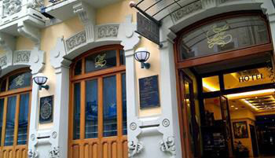
Hotel Alda El Suizo
Hotel
Reformado con mimo respetando su estética modernista: clásico pero actual. 32 habitaciones exteriores, muchas con balcón. Room service, baño privado, TV, minibar y wifi gratuito.
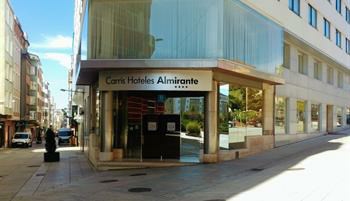
Hotel Almirante
Hotel 4★
Emblemático hotel 4 estrellas junto a la Plaza de España, a la entrada del barrio de A Magdalena. La mejor opción para hacer tu estancia en Ferrol inolvidable.
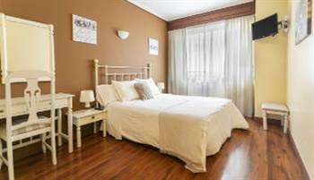
Hotel América
Hotel
Alojamiento pequeño y acogedor en las afueras de Ferrol. Ambiente tranquilo, ideal para descansar antes de comenzar el Camino.
Por la mañana, traslado opcional hasta Neda (acorta la etapa ~13km). La ruta te lleva hasta la costa gallega pasando por varias playas, con la Ría de Ferrol como telón de fondo, hasta llegar a la pequeña villa marinera de Pontedeume. Situada a orillas del río Eume, llegas al pintoresco pueblo cruzando el histórico Pont-de-Eume, el puente que da nombre a la localidad.
★
No te pierdas: las vistas sobre la Ría de Ferrol desde los acantilados y el medieval Pontedeume con sus galerías de madera, el mercado semanal y la torre de los Andrade.
Alojamientos representativos en Pontedeume
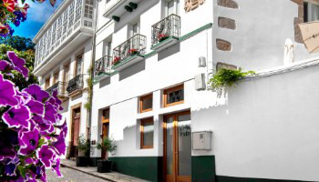
Hotel Camino do Eume
Hotel
Hermoso hotel recientemente restaurado en un edificio histórico del casco antiguo de Pontedeume con fachadas del s. XVII y XIX. Vistas a la Ría y jardín para relajarse tras la etapa.

Balcón del Eume
Hotel boutique
Pequeña y encantadora casa de huéspedes en las Fragas do Eume, en el Camino Inglés. El lugar ideal para descubrir el medieval Pontedeume y disfrutar de la playa de Cabañas.
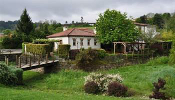
Hotel Montebreamo
Hotel rural
Casa de campo modernizada con 6 habitaciones espaciosas y camas muy cómodas. Situado en Puentedeume, a la orilla de la ría de A Coruña.
En esta etapa te rodearán las colinas verdes y aldeas rurales de Galicia, dejando atrás la costa y sus villas marineras. El Camino Inglés sigue siendo un camino tranquilo, sin masificaciones, donde disfrutar de la naturaleza gallega en plenitud. Puedes esperar algunos desniveles, pero serás recompensado con vistas espectaculares.
★
No te pierdas: el casco histórico medieval de Betanzos, con sus iglesias góticas, sus plazas y la famosa tortilla de Betanzos — la más valorada de Galicia. Hito histórico del Camino Inglés.
Alojamientos representativos en Betanzos

Hotel Geralos
Hotel
20 habitaciones dobles decoradas con piedra y metal. Aire acondicionado, minibar, caja fuerte, wifi y TV. El hotel dispone de salón y cafetería.

Hostal Pórtico
Hostal
En el corazón del casco histórico de Betanzos, resultado de la renovación de una casa antigua. Estilo contemporáneo que ofrece un ambiente de elegancia y confort.
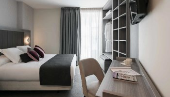
Hotel Villa de Betanzos
Hotel histórico
Con más de 30 años de experiencia en el sector turístico, el hotel ocupa un edificio de 1914 considerado de interés histórico y monumental. Tradición y hospitalidad familiar.
Traslado opcional a Presedo por la mañana (acorta la etapa ~11km). La ruta de hoy sube en su mayoría por un paisaje verde de praderas y campos, pasando numerosas granjas y aldeas gallegas. Pasarás por Hospital de Bruma, hito histórico del Camino Inglés donde confluyen las rutas de Ferrol y A Coruña.
★
No te pierdas: el Hospital de Bruma, punto de confluencia de las dos ramas del Camino Inglés (Ferrol y A Coruña), con su capilla románica y el ambiente peregrino que se intensifica a partir de aquí.
Alojamientos representativos en San Paio de Buscás

Casa Rural Doña María
Casa rural / B&B
Casa de huéspedes con dos apartamentos tranquilos, zonas comunes, suelo radiante y wifi gratuito. Ambiente íntimo y rural.

Hotel Casa Barreiro
Hotel
Fundado en 1875 y completamente renovado en 2001. Habitaciones espaciosas y confortables con todas las comodidades para una estancia excelente.
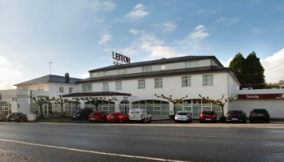
Casa Rural Antón Veiras
Casa rural
Casa de campo de más de 250 años, un claro ejemplo de la arquitectura rural gallega. Piedra, arcilla, granito y madera crean una atmósfera acogedora en una finca de más de 11.000 m².
Te espera uno de los paisajes más verdes de Galicia. La ruta discurre por pistas rurales y bosques, en su mayor parte cuesta abajo. Apenas hay aldeas en el camino, lo que permite disfrutar de la naturaleza a un ritmo pausado. Según disponibilidad, pernoctarás en Sigüeiro o Marantes.
★
No te pierdas: el cruce del río Tambre, que marca la antesala de Santiago. Desde aquí, cada kilómetro es un paso más hacia la Catedral. El ambiente del Camino se transforma: la emoción del final está muy cerca.
Alojamientos representativos en Sigüeiro

Siaba Pensión Boutique
Pensión boutique
En el centro de Sigüeiro, junto al río Tambre. Habitaciones cómodas con todos los servicios de hotel, adaptadas a las necesidades de cada peregrino.
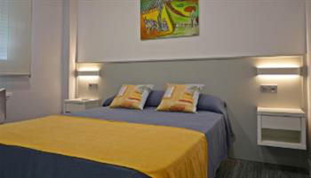
Hotel San Vicente
Hotel
Habitaciones con baño privado, TV, caja fuerte, teléfono y aire acondicionado. Gran jardín con piscina, restaurante y aparcamiento exterior.

Albergue Camiño Real
Albergue privado
Abierto en 2017 con el objetivo de ofrecer el mejor servicio al peregrino. Instalaciones amplias y cómodas en zona céntrica y tranquila, a pocos metros de cafés, restaurantes y farmacias.
Santiago de Compostela se acerca. La ruta pasa primero junto a una carretera, luego por pequeñas aldeas. Poco a poco te aproximas a la capital de Galicia: la emoción crece con cada kilómetro. Innumerables peregrinos han llegado antes que tú. Tómate un momento frente a la Catedral y disfruta del instante. La Misa del Peregrino al mediodía es imprescindible.
★
El momento: visita la Oficina del Peregrino para recoger tu Compostela oficial. Luego el abrazo al Apóstol en la Catedral. Son solo unos metros que muchos peregrinos describen como los más emotivos de su vida.
Alojamientos representativos en Santiago de Compostela
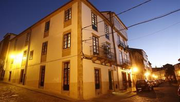
Hotel Altaïr
Hotel boutique
En la parte más tranquila del casco antiguo. Rodeado de los mejores restaurantes, tiendas y espacios de ocio. Arquitectura que equilibra tradición y modernidad.
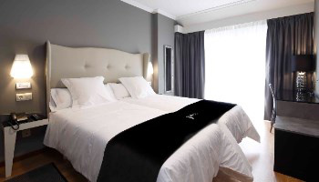
Hotel Lux Santiago
Hotel
En el centro de la capital gallega, a 800 metros de la Catedral. Ubicación inmejorable para explorar la ciudad en profundidad.
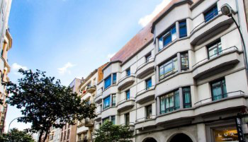
Hotel Boutique Capitol
Hotel boutique
Experiencia de alojamiento única en el centro histórico. Habitaciones modernas con decoración elegante y ambiente acogedor. A solo 650 metros de la Catedral.
Nuestro paquete
¿Qué incluye tu Camino?
Incluido en el precio
- Alojamiento en hoteles rurales y hostales con habitación privada y baño
- Traslado de mochila cada día entre alojamientos (máx. 20 kg)
- Credencial del peregrino y concha de vieira
- Traslados opcionales en los días 2 y 4
- Información de ruta detallada y tracks GPS
- Apoyo telefónico 24h con nuestro equipo en Lugo
- Desayuno continental en cada alojamiento
No incluido
- Vuelos y transporte hasta Ferrol
- Comidas (excepto desayuno)
- Seguro de viaje
- Equipamiento personal
- Noches adicionales
- Taxis o transporte público en ruta
- Actividades opcionales en Santiago
Precios
Elige tu tipo de alojamiento
Albergue privado
349€
por persona · 6 noches
Albergues privados seleccionados con camas confortables. Ideal para conocer otros peregrinos y compartir la experiencia.
⭐ Más reservado
Pensión privada
549€
por persona · 6 noches
Habitación privada con baño en pensiones y casas rurales. Desayuno incluido. El equilibrio perfecto entre precio y confort.
Hotel 3★
749€
por persona · 6 noches
Hoteles 3★ seleccionados con desayuno buffet y seguro de viaje incluido. La opción más cómoda para completar el Camino.
Reserva con solo el 30%. El resto 30 días antes de la salida. Cancelación gratuita hasta 21 días antes. Suplemento individual disponible.
Temporada
¿Cuándo ir?
Primavera
Abr – Jun ★★★★★
Paisajes en flor, clima suave, menos gente. La mejor época.
Verano
Jul – Ago ★★★★
El norte de España fresco. Más ambiente. Reserva con antelación.
Otoño
Sep – Oct ★★★★★
Temperatura ideal, colores espectaculares, menos peregrinos.
Preguntas frecuentes
Todo lo que necesitas saber
¿Cómo llego a Ferrol?
Puedes volar a Santiago de Compostela o A Coruña. Desde ambos aeropuertos hay varios autobuses diarios hasta Ferrol. Desde A Coruña con Arriva y desde Santiago con Monbus. El trayecto dura entre 1h y 1h 20min. Nota: El aeropuerto de Santiago estará cerrado del 23 de abril al 27 de mayo de 2026 por obras.
¿Qué nivel de forma física necesito?
El Camino Inglés está clasificado como fácil-moderado. Las etapas diarias son de 12 a 21 km. La ruta está bien señalizada y te proporcionamos notas de ruta detalladas. Si no estás en forma óptima, el propio Camino te pondrá en forma en los primeros días.
¿Puedo obtener la Compostela?
Sí. El Camino Inglés desde Ferrol supera los 100km mínimos exigidos por la Catedral de Santiago. Solo tienes que sellar tu credencial al menos dos veces por etapa. Tu credencial y concha te esperarán en el primer alojamiento.
¿Con cuánta antelación debo reservar?
Recomendamos reservar con al menos 6 semanas de antelación. En temporada alta (julio-agosto) y puentes, antes. En temporada baja podemos organizar el Camino en menos de una semana. Consúltanos sin compromiso.
¿Puedo caminar con mi mochila grande?
Sí, aunque no lo recomendamos. El traslado de mochila está incluido en todos nuestros paquetes para que camines libre. Si prefieres llevarlo todo, podemos eliminar ese servicio y ajustar el precio.
¿Qué pasa si no puedo completar una etapa?
Nuestro equipo en Lugo está disponible por teléfono las 24h para ayudarte. Hay transporte público y taxis disponibles en toda la ruta. Siempre encontramos una solución.
Cómo reservar
Proceso de reserva con Easy Camino Santiago
1
Solicita tu presupuesto
Rellena el formulario online o escríbenos . Te respondemos en menos de 24h con tu presupuesto personalizado.
2
Confirmamos tu Camino
Comprobamos disponibilidad y reservamos todos tus alojamientos. Te enviamos confirmación completa en 5 días laborables.
3
¡A caminar!
Recibes toda la documentación, la credencial y los tracks GPS. Nuestro equipo te acompaña durante todo el Camino .